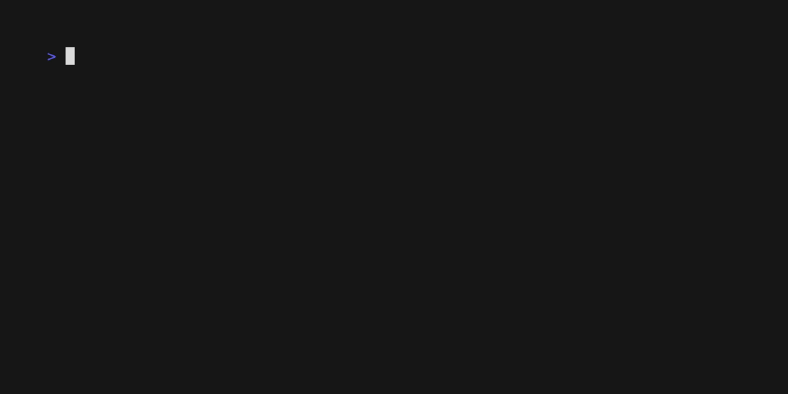
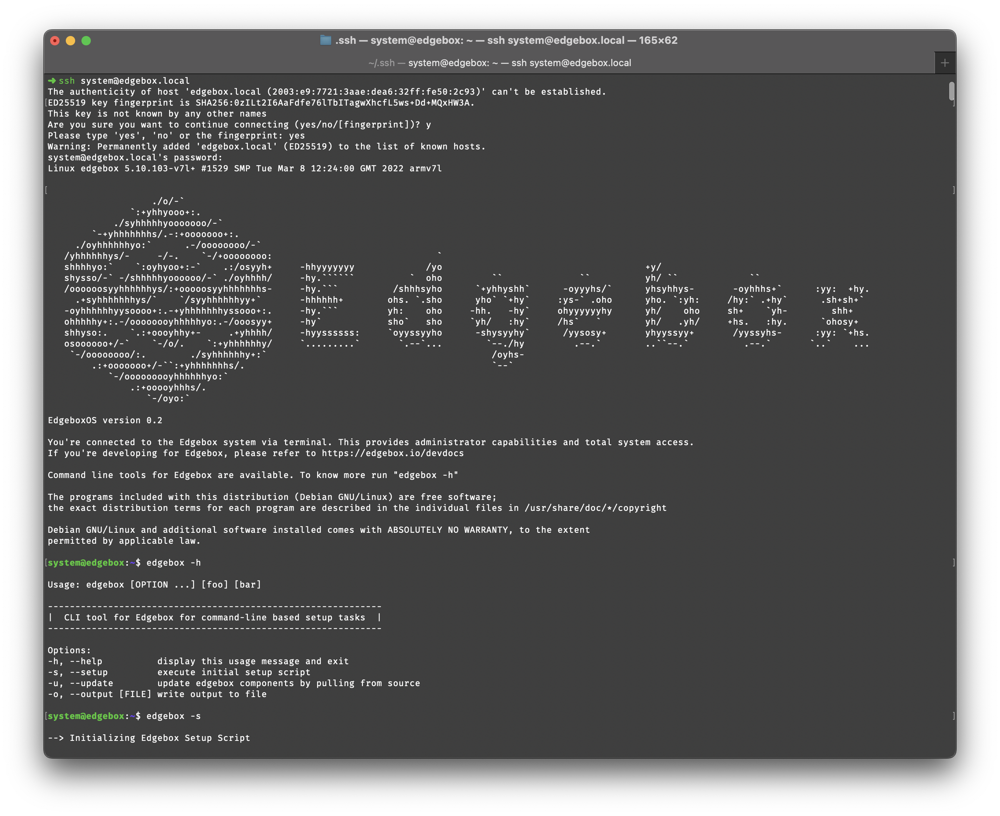

Raspberry Pi Installation
The Raspberry Pi is a small, inexpensive, single-board computer that can be used to run Edgebox. This is a quick and easy way to get a self-hosted system up and running.
The installer requires an initial setup on your computer, but after that, it is completely unattended. You need to have a working internet connection through the ethernet port or use the onboard wireless LAN.
☑ Prerequisites
Hardware
To run Edgebox on a Raspberry Pi, you will need the following hardware:
- Raspberry Pi 4 (4GB recommended) with ethernet or wireless LAN and a working internet connection
- SD Card (256GB+ recommended, but it works with as little as 16GB)
- A way to write the SD Card from your computer (e.g. SD Card reader)
Software
- A Linux or Mac computer with a working internet connection
- The
ua-netinst-configinstaller, which can be downloaded from here
⚙️ Setup
After you have the hardware, you need to setup the SD card. This is a one-time process that will be aided by our ua-netinst-config tool.

- Go to ua-netinst-config and download the latest version .zip file or clone the repository. This installer will be able to configure an operating system image that runs Edgebox on the Raspberry Pi.
- Run the command
make installto start the configuration process for the image. Answer the questions and wait for the process to finish. - Copy the contents inside the resulting "image" folder into a freshly formatted SD card as FAT32 (MS-DOS on Mac OS X)
⏱️ Installation
Under normal circumstances, you can just insert the SD card, power on your Raspberry pi, and wait around 35 minutes.
If you don't have a display attached, you can monitor the ethernet card LEDs to guess the activity status. When it finally reboots after installing everything you will see them illuminate on and off a few times when Raspbian configures on boot.
If the installation process fails, you will see SOS in Morse code (... --- ...) on an led. In this case, power off the Pi and check the log on the sd card.
If you do have a display, you can follow the progress and catch any possible errors in the default configuration or your own modifications. Once a network connection has been established, the process can also be followed via telnet (port 23).
If you have a serial cable connected, installer output can be followed there, too. If console=tty1 at then end of the cmdline.txt file is removed, you have access to the console in case of problems. Installation takes about 20 minutes with fast internet from power on to system fully running.
Setup Script
Included after installation in ~/home/system/ is a basg script with the name edgebox.sh. This script can be ran after installation to setup the necessary components for a proper functioning Edgebox. It can be run anywhere in a terminal as it is pre-included in the PATH.
The recommendation is that after installation, you should run the setup script. The system is SSH accessible through ssh system@edgebox, using the password set on the installer-config.txt file.
The available commands are:
edgebox -soredgebox --setup- Setup script, configures GitHub SSH Key (if it exists), and downloads all repositories and starts all components. Project files are available at~/home/system/componentsedgebox -uor--update- Pulls all newest commits form every repository in the project.
